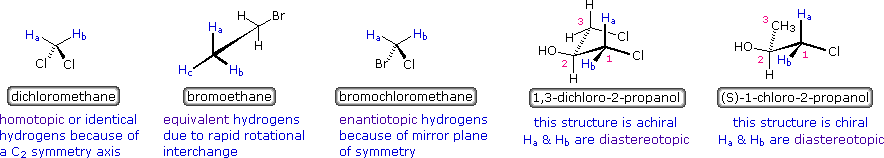
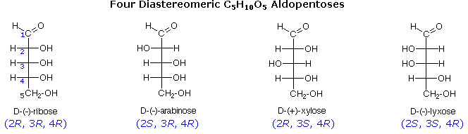
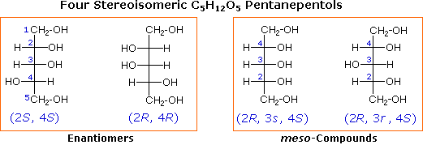
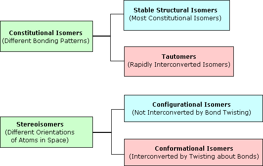
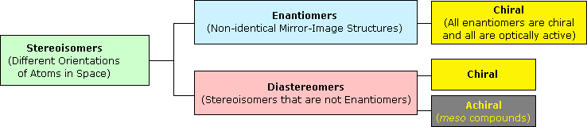

We noted earlier that not all methyl (or methylene or methyne) groups in a molecule are necessarily the same (structurally equivalent). Depending on the molecular constitution and configuration, similar atoms or groups of atoms may occupy different structural environments. The symmetry of a molecule is helpful in evaluating structural equivalence, since groups that are interchanged by a symmetry operation must have a characteristic relationship. As illustrated by the following examples, atoms or groups that are structurally interchanged by a rotational symmetry operation other than C1 are classified as homotopic and are considered structurally equivalent (e.g. the hydrogens in dichloromethane). Ligands that are not homotopic may be referred to generally as heterotopic. If a pair of atoms or groups are interchanged by a reflective symmetry operation they are termed enantiotopic (e.g. the hydrogens in bromochloromethane). It is instructive to confirm these assignments by considering the result of a hypothetical substitution. If homotopic groups are replaced in turn by an X substituent the products will be identical. However, if enantiotopic groups are similarly substituted the products are enantiomers. Enantiotopic atoms or groups are structurally equivalent in a symmetrical environment or in reactions with symmetrical reagents. By clicking on the name of each example shown below, the symmetry operation and hypothetical substitution will be displayed in greater detail. The "Restore" button returns the original display.

In the case of bromoethane (the 2nd example) the three methyl hydrogens are not structurally equivalent in a frozen conformation, but become so as this group rapidly rotates about its C–C sigma bond. This equivalence remains even when the methyl is bonded to a chiral center. The last two examples on the right illustrate a diastereotopic relationship of atoms. In these cases Ha and Hb are not interchanged by a symmetry operation, and substitution of each gives diastereomers as products. Although diastereotopic atoms or groups are similar, they are structurally nonequivalent and often exhibit different properties, such as nmr chemical shifts or reaction rates. A diagram summarizing this classification will be displayed by pressing the "Chart" button. In evaluating the structure and configuration of molecular components, it is useful to define the concept of prostereoisomerism. An atom bonded to heterotopic ligands may be considered a prostereogenic center. If the ligands are enantiotopic, as in the case of bromochloromethane shown above, the center is called prochiral, since replacement of one of the atoms (or groups) with a different substituent would convert the carbon to a chiral center. Cases in which the ligands are diastereotopic, rather than enantiotopic, are described to by the general term prostereogenic. Planar sp2-carbon functions having three different substituents at one carbon are similarly considered to have prochiral faces. Thus addition of hydride to the achiral ketone, 2-butanone, produces the chiral alcohol 2-butanol. In this case the planar carbonyl carbon has three different substituents (oxygen, methyl and ethyl), and therefore has prochiral faces (commonly designated re and si).
A three-dimensional molecular structure will be displayed here, and may be moved about with the mouse. Carbon is gray, hydrogen is cyan, oxygen is red, and chlorine is green. Characterize the relationship of ligands A & B by selecting one of the three terms listed below. A response to your answer will appear by clicking the Check Answer button.
Example 1 Example 2 Example 3 Example 4 Example 5 Example 6 Example 7 Example 8Example 9Example 10Example 11Example 12Example 13Example 14 Example 15
This page is the property of The Edvibe Team. Comments, questions and errors should be sent to contact@edvibe.co.ke. These pages are provided to the IOCD to assist in capacity building in chemical education. 05/05/2013

The four diastereomeric aldopentoses presented earlier and repeated above are all chiral. Each of these compounds has an enantiomer so, as expected, there are eight stereoisomers in all. By reducing the aldehyde function to a 1º-alcohol, the ends of the five-carbon chains become identical and the symmetry characteristics of the overall structure are such that the number of configurational stereoisomers falls from eight to four. These four isomers, shown below, are a pair of enantiomers and two meso-compounds.

In the enantiomeric pair on the left, carbon #3 is not a stereogenic center, since interchanging the H and OH substituents at this carbon does not change the overall configuration. This is not true for the meso compounds on the right. Interchanging the H and OH substituents on carbon #3 converts one isomer into its achiral partner. Stereogenic centers such as C#3 have been called pseudoasymmetric centers, and a configurational notation (r or s) may be assigned by noting that an R substituent is above an equivalent S substituent in the sequence rule (note the lower case letters used for this notation). The chain numbering on the right has changed, because in nearly symmetrical cases the nearest R center has precedent over a similarly oriented S center in determining the primary end of the chain.
CompositionThe number and kinds of atoms that make up a molecule. This information is supplied by a molecular formula.
ConstitutionThe bonding pattern of the atoms of a molecule (ie. which atoms are connected to which other atoms and by what kind of bonds). Different bonding constitutions are interconverted only by breaking and reforming covalent bonds. This information is supplied by a structural formula, and is implicit in the IUPAC name.
ConfigurationThe permanent spatial relationship of the atoms of a molecule to each other. Different configurations are interconverted only by breaking and reforming covalent bonds. This information is given in a stereo-formula, and is also provided by a prefix to the IUPAC name (eg. cis & trans).
ConformationThe variable spatial orientation of the atoms of a molecule to each other that occurs by rotation or twisting of bonds. Different conformations are interconverted without breaking covalent bonds. This information is supplied by conformational formulas, and also by nomenclature terms (eg. gauche & anti).


The molecule is the smallest observable group of uniquely bonded atoms that represent the composition, configuration and characteristics of a pure compound. Our chief focus up to this point has been to discover and describe the ways in which atoms bond together to form molecules. Since all observable samples of compounds and mixtures contain a very large number of molecules (ca.!020), we must also concern ourselves with interactions between molecules, as well as with their individual structures. Indeed, many of the physical characteristics of compounds that are used to identify them (e.g. boiling points, melting points and solubilities) are due to intermolecular interactions. All atoms and molecules have a weak attraction for one another, known as van der Waals attraction. This attractive force has its origin in the electrostatic attraction of the electrons of one molecule or atom for the nuclei of another. If there were no van der Waals forces, all matter would exist in a gaseous state, and life as we know it would not be possible. It should be noted that there are also smaller repulsive forces between molecules that increase rapidly at very small intermolecular distances.
For general purposes it is useful to consider temperature to be a measure of the kinetic energy of all the atoms and molecules in a given system. As temperature is increased, there is a corresponding increase in the vigor of translational and rotation motions of all molecules, as well as the vibrations of atoms and groups of atoms within molecules. Experience shows that many compounds exist normally as liquids and solids; and that even low-density gases, such as hydrogen and helium, can be liquified at sufficiently low temperature and high pressure. A clear conclusion to be drawn from this fact is that intermolecular attractive forces vary considerably, and that the boiling point of a compound is a measure of the strength of these forces. Thus, in order to break the intermolecular attractions that hold the molecules of a compound in the condensed liquid state, it is necessary to increase their kinetic energy by raising the sample temperature to the characteristic boiling point of the compound.
The following table illustrates some of the factors that influence the strength of intermolecular attractions. The formula of each entry is followed by its formula weight in parentheses and the boiling point in degrees Celsius. First there is molecular size. Large molecules have more electrons and nuclei that create van der Waals attractive forces, so their compounds usually have higher boiling points than similar compounds made up of smaller molecules. It is very important to apply this rule only to like compounds. The examples given in the first two rows are similar in that the molecules or atoms are spherical in shape and do not have permanent dipoles. Molecular shape is also important, as the second group of compounds illustrate. The upper row consists of roughly spherical molecules, whereas the isomers in the lower row have cylindrical or linear shaped molecules. The attractive forces between the latter group are generally greater. Finally, permanent molecular dipoles generated by polar covalent bonds result in even greater attractive forces between molecules, provided they have the mobility to line up in appropriate orientations. The last entries in the table compare non-polar hydrocarbons with equal-sized compounds having polar bonds to oxygen and nitrogen. Halogens also form polar bonds to carbon, but they also increase the molecular mass, making it difficult to distinguish among these factors.
Increasing Size
Molecular Shape
Molecular Polarity
The melting points of crystalline solids cannot be categorized in as simple a fashion as boiling points. The distance between molecules in a crystal lattice is small and regular, with intermolecular forces serving to constrain the motion of the molecules more severely than in the liquid state. Molecular size is important, but shape is also critical, since individual molecules need to fit together cooperatively for the attractive lattice forces to be large. Spherically shaped molecules generally have relatively high melting points, which in some cases approach the boiling point. This reflects the fact that spheres can pack together more closely than other shapes. This structure or shape sensitivity is one of the reasons that melting points are widely used to identify specific compounds. The data in the following table serves to illustrate these points.
Notice that the boiling points of the unbranched alkanes (pentane through decane) increase rather smoothly with molecular weight, but the melting points of the even-carbon chains increase more than those of the odd-carbon chains. Even-membered chains pack together in a uniform fashion more compactly than do odd-membered chains. The last compound, an isomer of octane, is nearly spherical and has an exceptionally high melting point (only 6º below the boiling point).
The most powerful intermolecular force influencing neutral (uncharged) molecules is the hydrogen bond. If we compare the boiling points of methane (CH4) -161ºC, ammonia (NH3) -33ºC, water (H2O) 100ºC and hydrogen fluoride (HF) 19ºC, we see a greater variation for these similar sized molecules than expected from the data presented above for polar compounds. This is shown graphically in the following chart. Most of the simple hydrides of group IV, V, VI & VII elements display the expected rise in boiling point with molecular mass, but the hydrides of the most electronegative elements (nitrogen, oxygen and fluorine) have abnormally high boiling points for their mass.
The exceptionally strong dipole-dipole attractions that cause this behavior are called the hydrogen bond. Hydrogen forms polar covalent bonds to more electronegative atoms such as oxygen, and because a hydrogen atom is quite small, the positive end of the bond dipole (the hydrogen) can approach neighboring nucleophilic or basic sites more closely than can other polar bonds. Coulombic forces are inversely proportional to the sixth power of the distance between dipoles, making these interactions relatively strong, although they are still weak (ca. 4 to 5 kcal per mole) compared with most covalent bonds. The unique properties of water are largely due to the strong hydrogen bonding that occurs between its molecules. In the following diagram the hydrogen bonds are depicted as magenta dashed lines.
The molecule providing a polar hydrogen for a hydrogen bond is called a donor. The molecule that provides the electron rich site to which the hydrogen is attracted is called an acceptor. Water and alcohols may serve as both donors and acceptors, whereas ethers, aldehydes, ketones and esters can function only as acceptors. Similarly, primary and secondary amines are both donors and acceptors, but tertiary amines function only as acceptors. Once you are able to recognize compounds that can exhibit intermolecular hydrogen bonding, the relatively high boiling points they exhibit become understandable. The data in the following table serve to illustrate this point.
Alcohols boil considerably higher than comparably sized ethers (first two entries), and isomeric 1º, 2º & 3º-amines, respectively, show decreasing boiling points, with the two hydrogen bonding isomers being substantially higher boiling than the 3º-amine (entries 5 to 7). Also, O–H---O hydrogen bonds are clearly stronger than N–H---N hydrogen bonds, as we see by comparing propanol with the amines. As expected, the presence of two hydrogen bonding functions in a compound raises the boiling point even further. Acetic acid (the ninth entry) is an interesting case. A dimeric species, shown on the right, held together by two hydrogen bonds is a major component of the liquid state. If this is an accurate representation of the composition of this compound then we would expect its boiling point to be equivalent to that of a C4H8O4 compound (formula weight = 120). A suitable approximation of such a compound is found in tetramethoxymethane, (CH3O)4C, which is actually a bit larger (formula weight = 136) and has a boiling point of 114ºC. Thus, the dimeric hydrogen bonded structure appears to be a good representation of acetic acid in the condensed state.
A related principle is worth noting at this point. Although the hydrogen bond is relatively weak (ca. 4 to 5 kcal per mole), when several such bonds exist the resulting structure can be quite robust. The hydrogen bonds between cellulose fibers confer great strength to wood and related materials.
Water has been referred to as the "universal solvent", and its widespread distribution on this planet and essential role in life make it the benchmark for discussions of solubility. Water dissolves many ionic salts thanks to its high dielectric constant and ability to solvate ions. The former reduces the attraction between oppositely charged ions and the latter stabilizes the ions by binding to them and delocalizing charge density. Many organic compounds, especially alkanes and other hydrocarbons, are nearly insoluble in water. Organic compounds that are water soluble, such as most of those listed in the above table, generally have hydrogen bond acceptor and donor groups. The least soluble of the listed compounds is diethyl ether, which can serve only as a hydrogen bond acceptor and is 75% hydrocarbon in nature. Even so, diethyl ether is about two hundred times more soluble in water than is pentane.
The chief characteristic of water that influences these solubilities is the extensive hydrogen bonded association of its molecules with each other. This hydrogen bonded network is stabilized by the sum of all the hydrogen bond energies, and if nonpolar molecules such as hexane were inserted into the network they would destroy local structure without contributing any hydrogen bonds of their own. Of course, hexane molecules experience significant van der Waals attraction to neighboring molecules, but these attractive forces are much weaker than the hydrogen bond. Consequently, when hexane or other nonpolar compounds are mixed with water, the strong association forces of the water network exclude the nonpolar molecules, which must then exist in a separate phase. This is shown in the following illustration, and since hexane is less dense than water, the hexane phase floats on the water phase.
It is important to remember this tendency of water to exclude nonpolar molecules and groups, since it is a factor in the structure and behavior of many complex molecular systems. A common nomenclature used to describe molecules and regions within molecules is hydrophilic for polar, hydrogen bonding moieties and hydrophobic for nonpolar species.
The attractive forces that exist between molecules are responsible for many of the bulk physical properties exhibited by substances. Some compounds are gases, some are liquids, and others are solids. The melting and boiling points of pure substances reflect these intermolecular forces, and are commonly used for identification. Of these two, the boiling point is considered the most representative measure of general intermolecular attractions. Thus, a melting point reflects the thermal energy needed to convert the highly ordered array of molecules in a crystal lattice to the randomness of a liquid. The distance between molecules in a crystal lattice is small and regular, with intermolecular forces serving to constrain the motion of the molecules more severely than in the liquid state. Molecular size is important, but shape is also critical, since individual molecules need to fit together cooperatively for the attractive lattice forces to be large. Spherically shaped molecules generally have relatively high melting points, which in some cases approach the boiling point, reflecting the fact that spheres can pack together more closely than other shapes. This structure or shape sensitivity is one of the reasons that melting points are widely used to identify specific compounds. Boiling points, on the other hand, essentially reflect the kinetic energy needed to release a molecule from the cooperative attractions of the liquid state so that it becomes an unencumbered and relative independent gaseous state species. All atoms and molecules have a weak attraction for one another, known as van der Waals attraction. This attractive force has its origin in the electrostatic attraction of the electrons of one molecule or atom for the nuclei of another, and has been called London dispersion force. The following animation illustrates how close approach of two neon atoms may perturb their electron distributions in a manner that induces dipole attraction. The induced dipoles are transient, but are sufficient to permit liquefaction of neon at low temperature and high pressure. Clicking on the diagram will reactivate the animation.
In general, larger molecules have higher boiling points than smaller molecules of the same kind, indicating that dispersion forces increase with mass, number of electrons, number of atoms or some combination thereof. The following table lists the boiling points of an assortment of elements and covalent compounds composed of molecules lacking a permanent dipole. The number of electrons in each species is noted in the first column, and the mass of each is given as a superscript number preceding the formula.
Two ten electron molecules are shown in the first row. Neon is heavier than methane, but it boils 84º lower. Methane is composed of five atoms, and the additional nuclei may provide greater opportunity for induced dipole formation as other molecules approach. The ease with which the electrons of a molecule, atom or ion are displaced by a neighboring charge is called polarizability, so we may conclude that methane is more polarizable than neon. In the second row, four eighteen electron molecules are listed. Most of their boiling points are higher than the ten electron compounds neon and methane, but fluorine is an exception, boiling 25º below methane. The remaining examples in the table conform to the correlation of boiling point with total electrons and number of nuclei, but fluorine containing molecules remain an exception. The anomalous behavior of fluorine may be attributed to its very high electronegativity. The fluorine nucleus exerts such a strong attraction for its electrons that they are much less polarizable than the electrons of most other atoms.
Of course, boiling point relationships may be dominated by even stronger attractive forces, such as involving electrostatic attraction between oppositely charged ionic species, and between the partial charge separations of molecular dipoles. Molecules having a permanent dipole moment should therefore have higher boiling points than equivalent nonpolar compounds, as illustrated by the data in the following table.
In the first row of compounds, ethane, ethene and ethyne have no molecular dipole, and serve as useful references for single, double and triple bonded derivatives that do. Formaldehyde and hydrogen cyanide clearly show the enhanced intermolecular attraction resulting from a permanent dipole. Methyl fluoride is anomalous, as are most organofluorine compounds. In the second and third rows, all the compounds have permanent dipoles, but those associated with the hydrocarbons (first two compounds in each case) are very small. Large molecular dipoles come chiefly from bonds to high-electronegative atoms (relative to carbon and hydrogen), especially if they are double or triple bonds. Thus, aldehydes, ketones and nitriles tend to be higher boiling than equivalently sized hydrocarbons and alkyl halides. The atypical behavior of fluorine compounds is unexpected in view of the large electronegativity difference between carbon and fluorine.
Water is the single most abundant and important liquid on this planet. The miscibility of other liquids in water, and the solubility of solids in water, must be considered when isolating and purifying compounds. To this end, the following table lists the water miscibility (or solubility) of an assortment of low molecular weight organic compounds. The influence of the important hydrogen bonding atoms, oxygen and nitrogen is immediately apparent. The first row lists a few hydrocarbon and chlorinated solvents. Without exception these are all immiscible with water, although it is interesting to note that the π-electrons of benzene and the nonbonding valence electrons of chlorine act to slightly increase their solubility relative to the saturated hydrocarbons. When compared with hydrocarbons, the oxygen and nitrogen compounds listed in the second, third and fourth rows are over a hundred times more soluble in water, and many are completely miscible with water.
Some general trends are worth noting from the data above. First, alcohols (second row left column) are usually more soluble than equivalently sized ethers (second row right column). This reflects the fact that the hydroxyl group may function as both a hydrogen bond donor and acceptor; whereas, an ether oxygen may serve only as an acceptor. The increased solubility of phenol relative to cyclohexanol may be due to its greater acidity as well as the pi-electron effect noted in the first row. The cyclic ether THF (tetrahydrofuran) is more soluble than its open chain analog, possibly because the oxygen atom is more accessible for hydrogen bonding to water molecules. Due to the decreased basicity of the oxygen in the aromatic compound furan, it is much less soluble. The oxygen atom in anisole is likewise deactivated by conjugation with the benzene ring (note, it activates the ring in electrophilic substitution reactions). A second oxygen atom dramatically increases water solubility, as demonstrated by the compounds listed in the third row. Again hydroxyl compounds are listed on the left. Nitrogen exerts a solubilizing influence similar to oxygen, as shown by the compounds in the fourth row. The primary and secondary amines listed in the left hand column may function as both hydrogen bond donors and acceptors. Aromaticity decreases the basicity of pyrrole, but increases its acidity. The compounds in the right column are only capable of an acceptor role. The low solubility of the nitro compound is surprising.